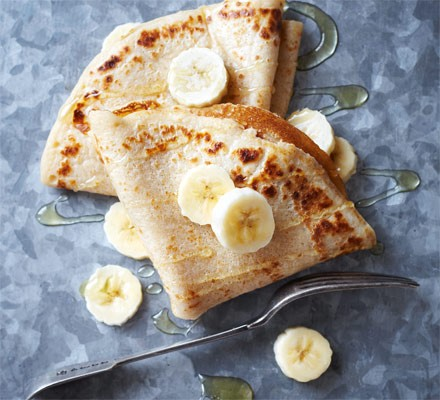

Gluten free pancakes

Description
A quick and easy gluten free (GF) pancake recipe
Ingredients
- 125g GF plain flour
- 1 egg
- 250ml milk
- butter
Method
- Put the flour in a bowl and make a well in the centre
- Crack the egg in the well and pour in a quarter of the milk
- Use an electric balloon whisk to thoroughly combine the mixture
- Once you have a paste, mix in another quarter and once lump free, mix in the remaining milk
- Leave to rest for 20 mins. Stir again before using
- Heat a small non-stick frying pan with a knob of butter. When the butter starts to foam, pour a small amount of the mixture into the pan and swirl around to coat the base – you want a thin layer
- Cook for a few mins until golden brown on the bottom, then turn over and cook until golden on the the other side
- Repeat until you have used all the mixture, stirring the mixture between pancakes and adding more butter for frying as necessary
- Serve with agave syrup and a squeeze or orange juice or a pancake filling of choice